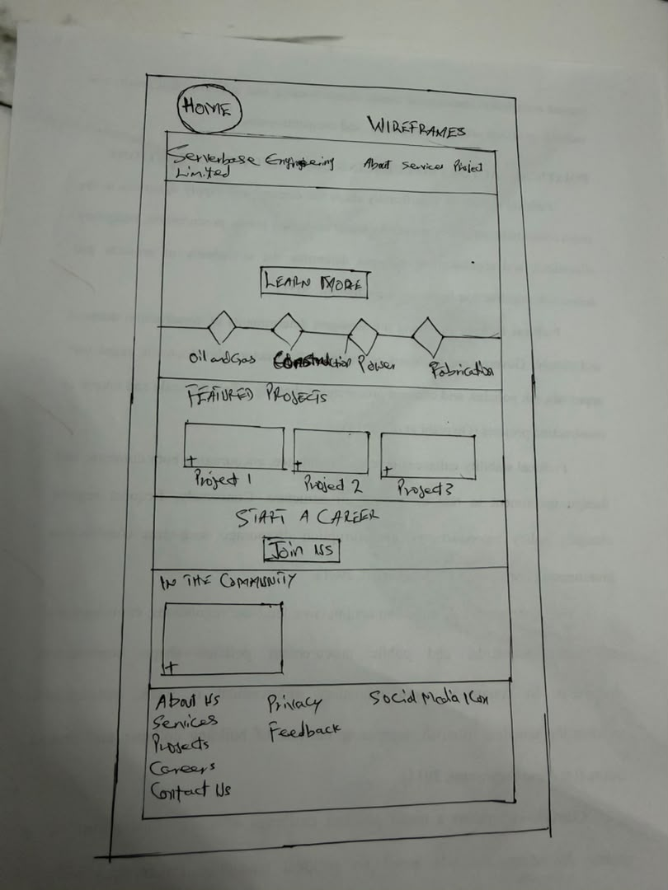
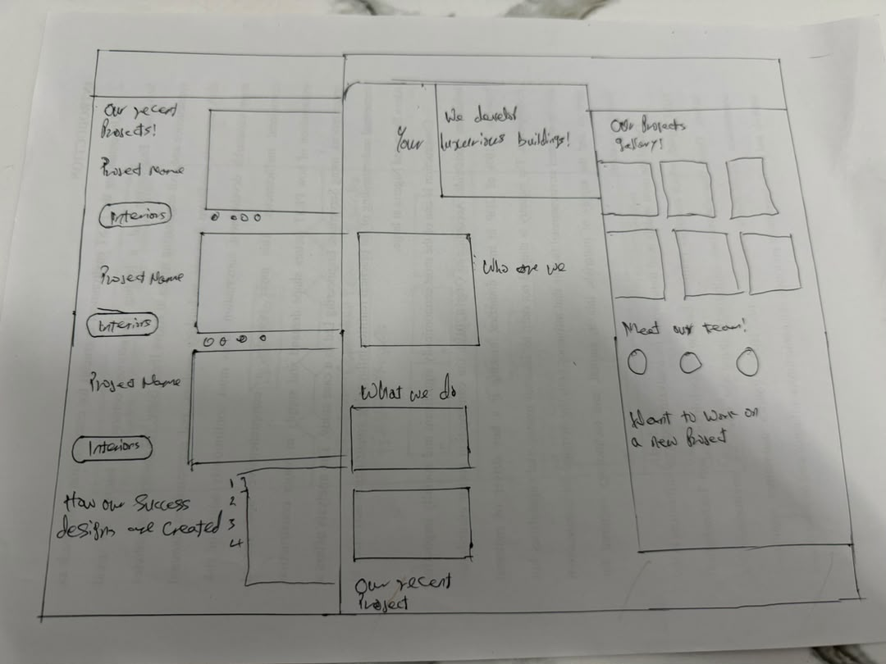

1. Site Name
Serverbase Engineering Limited
This name represents the company and its focus on providing construction and engineering solutions. It was selected because it is professional, memorable, and directly identifies the organization.
Proposed domain: serverbaseengineering.com
2. Site Purpose
The purpose of this website is to introduce Serverbase Engineering Limited and provide visitors with information about the company's construction and engineering services. The website will showcase completed projects, explain the services offered, provide company information, and make it easy for potential clients to contact the company or submit an inquiry.
3. Scenarios
These are questions that potential website visitors may ask:
- What construction and engineering services does Serverbase Engineering Limited offer?
- Can I view examples of projects completed by the company?
- How can I contact the company to request a quotation?
- What information do I need to provide when making a project inquiry?
4. Color Scheme
The website will use a professional color scheme that reflects reliability, confidence, and the construction industry.
Dark Navy — #1F2937
Used for headings, navigation, and important backgrounds.
Construction Orange — #F59E0B
Used for buttons, links, highlights, and visual accents.
White — #FFFFFF
Used for the main page background and text on dark backgrounds.
5. Typography
Roboto Slab
Serverbase Engineering Limited
Used for the main site heading and section headings.
Roboto
Building reliable solutions through quality construction and engineering services.
Used for paragraphs, navigation, buttons, and general content.
6. Wireframes
These wireframes illustrate the planned homepage layout for Serverbase Engineering Limited on mobile and desktop screens. They focus on content structure, navigation, and responsive page organization.
Small Viewport — Mobile

Large Viewport — Desktop
